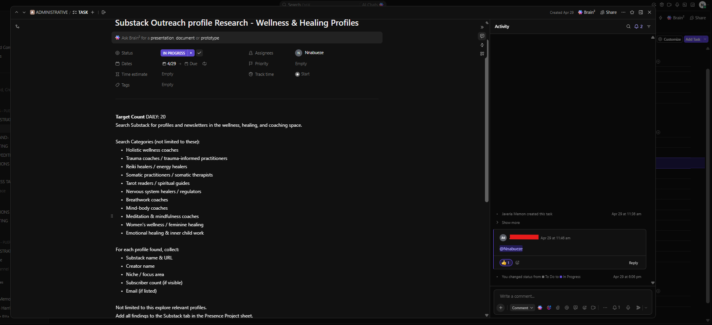

Project Overview
During my internship with PUEPR, I supported a prospect research initiative focused on identifying relevant wellness, healing, coaching, and personal development creators on Substack. The project required more than simple data collection. Each profile had to be researched, categorized, validated, checked for duplicates, reviewed for email availability, and documented in a structured database. To maintain data quality, a validation workflow was applied throughout the research process, ensuring only relevant and verified profiles progressed to the final dataset.
Business Challenge
The organization needed a reliable database of Substack creators operating within wellness-related niches. Because data was being collected continuously, there was a risk of duplicate records, missing contact information, inconsistent categorization, and inaccurate prospect data. A structured validation process was required to maintain data integrity and ensure the final research output remained useful for future outreach and business development initiatives.
My Responsibilities
- Researched Substack creators and newsletters.
- Identified relevant wellness, healing, coaching, and mindfulness profiles.
- Collected creator information and publication details.
- Categorized profiles according to niche and specialization.
- Performed duplicate detection and validation checks.
- Verified email availability where possible.
- Maintained structured datasets in Google Sheets.
- Reviewed records to ensure data quality and consistency.
- Prepared validated prospect lists for operational use.
Research Categories
Tools Used
Evidence Gallery
1. Research Assignment & Collection Requirements

This task outlined the daily research objectives, target creator categories, required data fields, and collection guidelines. Research focused on identifying relevant Substack publications within wellness and healing niches while ensuring consistent documentation across all records.
2. Raw Research Dataset & Validation Workflow

Research findings were captured in a structured spreadsheet containing publication names, creator information, niche categories, profile URLs, subscriber counts, email availability, duplicate checks, niche validation results, and review status indicators. This workflow enabled ongoing quality control while preventing duplicate entries from progressing into the validated dataset.
3. Cleaned & Validated Prospect Database

After validation, approved records were moved into a cleaned dataset containing verified creator information and quality-reviewed entries. Validation checks helped maintain consistency, improve data reliability, and provide stakeholders with a more accurate prospect database for future outreach activities.
Business Impact
- Built a structured creator research database.
- Improved data accuracy through validation procedures.
- Reduced duplicate records through quality checks.
- Standardized creator categorization and documentation.
- Improved reliability of future outreach datasets.
- Created a repeatable research and validation workflow.